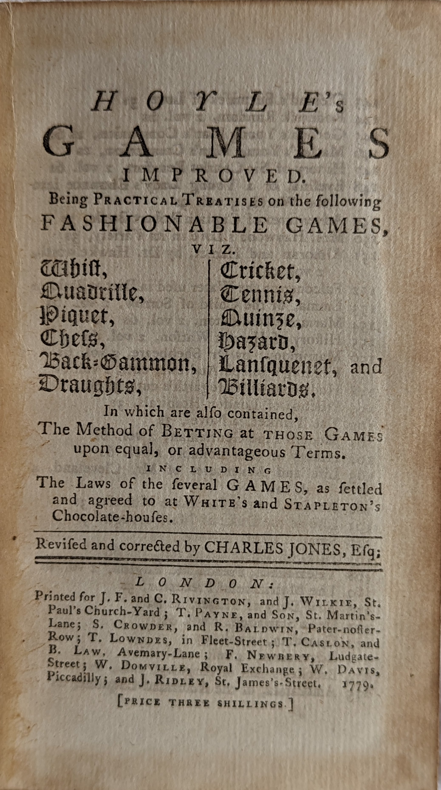

A Descriptive Bibliography of Edmond Hoyle
Copyright © 2014-26 by David Levy
(page updated 2025-04-29)User Guide
Jones.2
Hoyle's Games Improved, printed for J. F. and C. Rivington et al, second London edition, 1779.
 |
Title: | HOYLE’s | GAMES | IMPROVED. | Being Practical Treatises on the following | FASHIONABLE GAMES, | VIZ. | [6 lines to left of rule] Whiſt, | Quadrille, | Piquet, | Cheſs, | Back=Gammon, | Draughts, | [6 lines to right of rule] Cricket, | Tennis, | Quinze, | Hazard, | Lanſquenet, and | Billiards. | In which are alſo contained, | The Method of Betting at those Games | upon equal, or advantageous Terms. | INCLUDING | The Laws of the ſeveral GAMES, as ſettled | and agreed to at White's and Stapleton's | Chocolate-houſes. | [rule] | Reviſed and corrected by CHARLES JONES, Eſq; | [oxford rule] | LONDON: | Printed for J. F. and C. Rivington, and J. Wilkie, St. | Paul’s Church-Yard; T. Payne, and Son, St. Martin’s-|Lane; S. Crowder, and R. Baldwin, Pater-noſter-|Row; T. Lowndes, in Fleet-Street; T. Caslon, and | B. Law, Avemary-Lane; F. Newbery, Ludgate-|Street; W. Domville, Royal-Exchange; W. Davis, | Piccadilly; and J. Ridley, St. James’s Street. 1779. | {price Three Shillings.} |
| Collation: | 12o: a6 B–N12 O6 [$½ signed; signing K5 as K4]; 156 leaves, pp. [i–ii] iii–xii, [1] 2 [3] 4–93 [94] 95–116 [117] 118–171 [172–173] 174–294 [295–300] [misprinting viii as vii] |
| Contents: | Signature (Page) Reference | Contents | Signature (Page) Reference | Running Titles |
| a1r (i) | title | |||
| a1v (ii) | blank | |||
| a2r–a6v (iii–xii) | ‘[short rule] | CONTENTS. | [...]’ | a2v–a6v (iv–xii) | ‘The CONTENTS’ | |
| B1r–B1v (1–2) | ‘THE | GAME OF WHIST. | [...]’ | |||
| B2r–E2v (3–76) | ‘[triple rule] | THE | GAME AT WHIST; | By EDMOND HOYLE, Gent. | [...]’ | B2v–D4r (4–55) | ‘The Game of WHIST.’ | |
| D4v–D7r (56–61) | ‘The Laws of WHIST.’ | |||
| D7v–E2v (62–76) | ‘The Game of WHIST.’ | |||
| E3r–E11r (77–93) | ‘The following MAXIMS for WHIST, | by Mr. William Payne, are now added, | by Permiſſion of the Proprietor. | [...]’ | E3r–E11r (77–93) | ‘Maxims for WHIST.’ | |
| E11v–F10v (94–116) | ‘THE | GAME of QUADRILLE. | By Mr. HOYLE. | [...]’ | E12r–F6v (95–108) | ‘The Game of QUADRILLE.’ | |
| F7r–F8v (109–112) | ‘The Laws of QUADRILLE.’ | |||
| F9r–F10v (113–116) | ‘Terms of QUADRILLE.’ | |||
| on F10v (116) | ‘Terms of QADRILLE.’ | |||
| F11r–G4r (117–127) | ‘THE | GAME OF PIQUET | [...]’ | F11v–G4r (118–127) | ‘The Game of PIQUET.’ | |
| G4v–H6r (128–155) | ‘[rule] | Mr. HOYLE's Rules | FOR THE | GAME OF PIQUET. | [...]’ | G5r–H4r (129–151) | ‘Rules for the Game of PIQUET.’ | |
| H4v–H6r (152–155) | ‘Laws for the Game of PIQUET.’ | |||
| H6v–H8r (156–159) | ‘[reverse oxford rule] | INTRODUCTION | TO THE | GAME OF CHESS. | [...]’ | H7r–H7v (157–158) | ‘The Game of CHESS.’ | |
| H8r–I2r (159–171) | ‘[...] | Rules and Observations for CHESS. | By Mr. HOYLE. | [...]’ | H8r–H10v (159–164) | ‘Rules for CHESS.’ | |
| H11r–H11v (165–166) | ‘The Game of CHESS.’ | |||
| H12r–I1v (167–170) | ‘Rules for CHESS.’ | |||
| I2r (171) | ‘Laws at CHESS.’ | |||
| I2v (172) | ‘INTRODUCTION | TO THE | GAME OF BACK-GAMMON, | With the moſt approved Method of playing at it.| [...]’ | |||
| I3r–K6r (173–203) | ‘TREATISE OF BACK-GAMMON. | By Mr. HOYLE. | [...]’ | I3v–K5v (174–202) | ‘The Game of BACK-GAMMON.’ | |
| K6r (203) | ‘The Laws of BACK-GAMMON.’ | |||
| K6v–L5r (204–225) | ‘[oxford rule] | By Permiſſion of Mr. Payne, | An EXTRACT FROM HIS | GAME OF DRAUGHTS. | Containing Twenty ſelect Games; together with | many critical Situations for Drawn Games, | Won Games, and Fine Strokes. | [...]’ | K7r–L5r (205–225) | ‘The Game of DRAUGHTS.’ | |
| L5v–L7v (226–230) | ‘[rule] | Printed by Permiſſion of Mr. Ridley, in St. | James's Street. | [short rule] | THE | LAWS of CRICKET. | Reviſed at the Star and Garter, Pall-Mall, Fe-|bruary 25, 1774, by a Committee of No-|blemen and Gentlemen of Kent, Hampſhire, | Surry, Suſſex, Middleſex, and London. | [...]’ | L6r–L7v (227–230) | ‘The Game of CRICKET.’ | |
| L8r–L10v (231–236) | ‘THE | GAME OF TENNIS. | [...]’ | L8v–L10v (232–236) | ‘The Game of TENNIS.’ | |
| L11r–L11v (237–238) | ‘THE | GAME OF QUINZE. | [...]’ | L11v (238) | ‘The Game of QUINZE.’ | |
| L12r–M1v (239–242) | ‘THE | GAME OF HAZARD. | [...]’ | L12v–M1v (240–242) | ‘The Game of HAZARD.’ | |
| M2r–M2v (243–244) | ‘THE | GAME OF LANSQUENET. | [...]’ | M2v (244) | ‘The Game of LANSQUENET.’ | |
| M3r–O3v (245–294) | ‘[oxford rule] | A TREATISE ON | BILLIARDS, | [...]’ | M3v–M8r (246–255) | ‘The Game of BILLIARDS. | Rules for the White Winning Game.’ | |
| M8v–M9r (256–257) | ‘The Game of BILLIARDS. | Rules for the White Losing Game.’ | |||
| M9v–N1r (258–265) | ‘The Game of BILLIARDS. | Carambole Winning Game.’ | |||
| N1v–N4r (266–271) | ‘The Game of BILLIARDS. | Carambole Losing Game.’ | |||
| N4v–N9v (272–282) | ‘FORTIFICATION BILLIARDS.’ | |||
| O3v (294) | ‘[...] | The Binder is to put the Plate after Page 276. | FINIS.’ | N10r–O3v (283–294) | ‘ODDS AT BILLIARDS.’ | |
| O4r–O6v (295–300) | ‘BOOKS printed for the Proprietors. | [...]’ |
| Plates: | on K7r(205) woodblock: ‘[...] | THE | DRAUGHT TABLE. | [...]’ after N6v(276) copperplate: bifolium with engravings Plan of Fortification Billiards and Perspective View of Fortification Billiards. |
| Catchwords: | D12r(71) Anſwer. [Anſwer,]; F9r(113) Game, [Game;] |
| Press Figures: | a3v(i):9; a6v(o):2; B7r(o):2; B11v(i):10; C1v(i):5; C8v(o):1; D2v(o):9; D11v(i):5; E7v(i):5; E8v(o):6; F11r(o):7; F12r(i):2; G11v(i):9; G12v(o):3; H12r(i):6; H12v(o):9; I1v(i):9; I11r(o):6; K2v(o):1; K5v(i):5; L7r(o):5; L9v(i):7; M5v(i):6; M7r(o):3; N8r(i):2; N8v(o):9 |
| Publisher: | J. F. and C. Rivington, John Wilkie, T. Payne and Son, Stanley Crowder, Robert Baldwin I, Thomas Lowndes, Thomas Caslon, Bedwell Law, Francis Newbery, William Domville, William Davis, James Ridley |
| Notices: | 1779-11-13 London Chronicle: "This day was published, a new edition, in 12mo, price 3s. only...Notes are given to illustrate the games by Hoyle; and those marked * are additional improvements...N. B. Mr. Dew's Treatise on Billiards may be had separate, price 1s. sewed." |
| Price: | 3s. (title, advertisement) |
| References: | ESTC T87526, Horr 734, Jessel 917, Rather 60 |
| Copies Seen: | ABu [SB 7904 Hoy 2]; BFl [I.795/HOYL (b1124776)]; E [(Ao).8/2.26]; L [1040.b.30]; O [Jessel f.595]; Copisarow; NvLN [GV1241.H69 1779a]; OCl [789.87H F79J2]; PPL [Iu Hoyl Allen 338]; TNJ [GV1227.J7 1779]; Levy [1746] |
| Other Copies: | AWn [W.p. 1996]; Gu [Sp Coll Bk10-l.18]; LEp [795/HOY]; Luu [Reference Adult 790]; NW [Reference Adult 790]; LT [DAM 196]; LT [Wb 682]; LT [Wb 721]; Pm [753894]; CaBVa [790.1 H86g1]; InU-Li [GV1241.H86 1779]; MH-H [SG3652.179]; MoU [GV1201.42.H69 1779]; NjP [42485.479.12] (Google); NjR [GV1243.H85 1779]; RP [793 H867h2 SpecColH] |
| Notes: | 1779-07-28: Entered at Stationers' Hall in the name of Thomas Lowndes.Some copies have press figure 6 rather than 2 on F12r, page 119. |